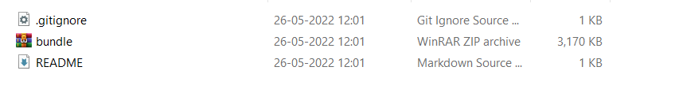
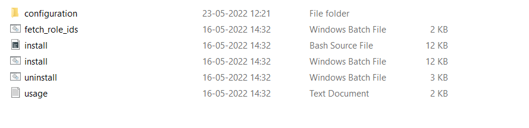
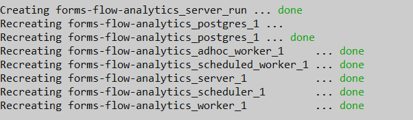
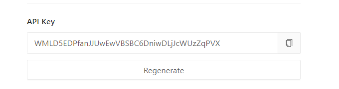
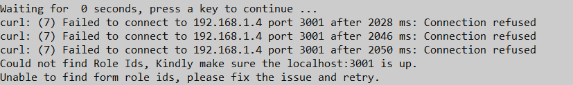
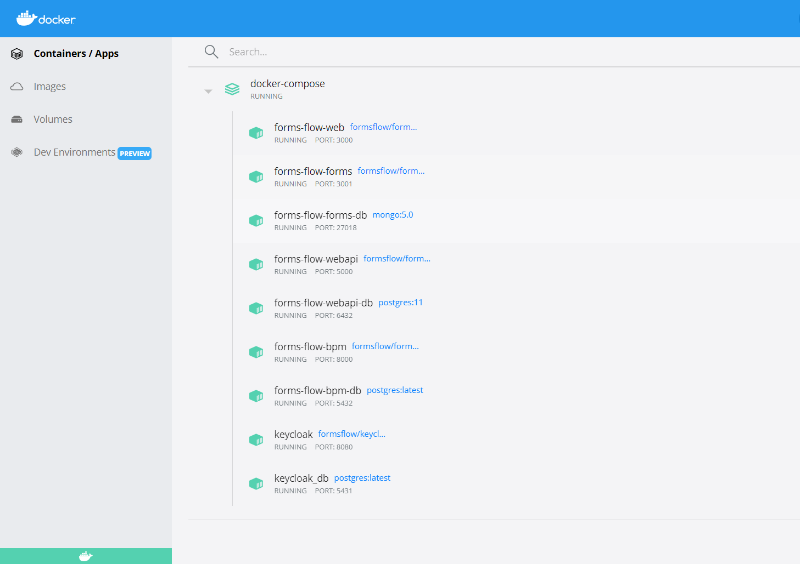

Quick Installation
For Docker based single click installation follow the below instructions.
- Download the bundle.zip file and extract it wherever you want.
- After extracting you will get the following files.
- Here install.bat/bash are the installation files for windows and linux. The docker-compose file and the newly creating env files can be seen inside the configuration folder.
- While you start the installation, you can see the following general questions that is been asked,
- If you need to add analytics in the installation, you can give “y” or else “n”.
- You can give N if you do not have a default keycloak, the system will defaultly
install keycloak for you.After the keycloak gets up in the docker you have to
provide the client secret key from the keycloak browser.
What is your [Keycloak] forms-flow-bpm client secret key?
Also, if you already have a keycloak in your docker, then you have to give certain details like, - Keycloak url
- Keycloak Realm name
- Keycloak admin user name
- Keycloak admin password
- Forms-flow-bpm client secret key
- After each component gets up in the docker, You can see the statement “done” in the command prompt.
- After the analytics get up (if you had chosen analytics), then it asks you the redash api key.
- . After the forms-flow-forms get up in the docker, it takes some time to generate role id’s. So it checks with the system and find if it is able to access the port and generate role id’s.
- Then all other components get up in the docker.
- As long as the role id’s is not generated it shows the error message “curl error” and try to start up the next attempt, so just wait for the system to confirm.
- If everything gets up in the docker the system shows the completion message.


Do you want analytics to include in the installation? [y/n]
Do you have an existing keycloak?[y/n]?

What is your Redash API key?



********************** formsflow.ai is successfully installed ****************************
Press any key to continue . . .
« Previous Next »